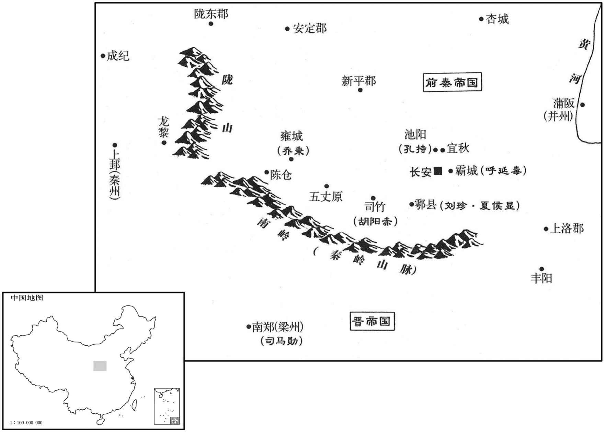

公元353年资治通鉴：本年记事、原文与白话对照
按原书编年位置阅读；追叙和史论不等于本年发生的事件。白话采用所据译本，缺译不以生成译文补齐。
卷99 · 本年记事
公元353年 · 晋孝宗穆皇帝永和九年
九年〔（癸丑、三五三）〕
上传原文的注释括号有异常，字符原样保留；无法可靠划分的段落默认全文显示。
本年事件索引（现代整理）
- 东晋实行大赦
- 前燕主慕容俊立他的后妃可足浑氏为皇后
- 前秦击败凉军，王擢败退
- 东晋交州刺史阮敷讨伐林邑国，攻破了五十多座营垒
- 后赵原来的卫尉常山人李犊聚集兵众数千人背叛了前燕
- 刘康假称刘曜之子起兵被擒
- 东晋朝廷任安西将军谢尚为尚书仆射
- 张重华再攻上邽，秦军败退
- 慕容恪降服李犊并攻吕护
- 前秦苻飞在仇池攻氐王杨初
- 苻健纳张遇继母，张遇谋反失败
- 前秦任左仆射鱼遵为司空
- 前秦丞相苻雄率军二万人回到长安
- 姚襄屯淮南，殷浩暗中打压
- 魏憬的子弟们多次往来寿春，姚襄越发怀疑、担心
- 殷浩暗地里遣人劝诱梁安、雷弱儿
- 姚襄大败殷浩北伐军
- 张重华病重，张祚与赵长密谋
- 谢艾被召辅政，张祚等秘不发丧
- 张重华卒，张曜灵即位
- 姚襄击败殷浩部将
- 后赵末年
- 前秦苻雄克池阳，斩杀了孔持
- 姚襄渡过淮河，驻所在盱眙
- 张祚废张曜灵自立凉公
- 慕容恪等荐举慕容霸

本年形势与背景参考图
春，正月，乙卯朔，大赦。
春季，正月，乙卯朔（初一），东晋实行大赦。
二月，庚子，燕主儁立其妃可足浑氏为皇后，〔为可足浑后乱燕张本。可足浑，北方三字姓。〕世子晔为皇太子，皆自龙城迁于蓟宫。
二月，庚子（十七日），前燕国主慕容俊立他的后妃可足浑氏为皇后，立长子慕容晔为皇太子，他们全都从龙城迁至蓟城王宫。
张重华遣将军张弘、宋修会王擢帅步骑万五千伐秦；〔帅，读曰率。骑，奇寄翻。〕秦丞相雄、卫将军菁拒之，大败凉兵于龙黎，〔新唐书地理志：陇州吴山县有龙盘府、龙盘城。吴山，后魏之南由县地。疑龙县即龙盘也。败，补迈翻；下所败同。〕斩首万二千级，虏张弘、宋修；王擢弃秦州，奔姑臧。秦主健以领军将军苻愿为秦州刺史，镇上邽。
张重华派将军张弘、宋修会合王擢率领步、骑兵一万五千人讨伐前秦，前秦丞相苻雄、卫将军苻菁率兵抵抗，凉兵在龙黎被彻底打败，一万二千人被斩首，张弘、宋修被俘。王擢放弃了秦州，逃到姑臧。前秦国主苻健任命领军将军苻愿为秦州刺史，镇守上。
三月，交州刺史阮敷讨林邑，破五十余垒。
三月，东晋交州刺史阮敷讨伐林邑国，攻破了五十多座营垒。
赵故卫尉常山李犊聚数千人叛燕。
后赵国原来的卫尉常山人李犊聚集兵众数千人背叛了前燕。
西域胡刘康诈称刘曜子，聚众于平阳，自称晋王；夏，四月，秦左卫将军苻飞讨擒之。
西域胡人刘康谎称自己是刘曜的儿子，在平阳聚集兵众，自称晋王。夏季，四月，前秦左卫将军苻飞讨伐并擒获了他。
以安西将军谢尚为尚书仆射。
东晋朝廷任命安西将军谢尚为尚书仆射。
五月，张重华复使王擢帅众二万伐上邽，〔复，扶又翻。〕秦州郡县多应之；苻愿战败，奔长安。重华因上疏请伐秦，诏进重华凉州牧。
五月，张重华再次派王擢率领兵众二万人讨伐上，秦州的郡县大多都响应他们。苻愿被打败，逃至长安。张重华于是就向东晋朝廷上疏，请求讨伐前秦。朝廷下诏，晋升张重华为凉州牧。
燕主儁遣卫将军恪讨李犊，犊降，〔降，户江翻；下同。〕遂东击吕护于鲁口。
前燕国主慕容俊派卫将军慕容恪讨伐李犊，李犊投降。于是慕容恪东进，到鲁口攻打吕护。
六月，秦苻飞攻氐王杨初于仇池，为初所败。〔杨初据险以拒秦，秦兵虽强，故为初所败。败，补迈翻。〕丞相雄、平昌王菁帅步骑四万屯于陇东。
六月，前秦苻飞在仇池攻打氐王杨初，但被杨初打败。丞相苻雄、平昌王苻菁率领四万步、骑兵驻扎在陇东。
秦主健纳张遇继母韩氏为昭仪，数于众中谓遇曰：〔数，所角翻。〕「卿，吾假子也。」遇耻之，因雄等精兵在外，阴结关中豪杰，欲灭苻氏，以其地来降。秋，七月，遇与黄门刘晃谋夜袭健，晃约开门以待之。会健使晃出外，晃固辞，不得已而行。遇不知，引兵至门，门不开；事觉，伏诛。于是孔持严：「持」改「特」。】〕起池阳，刘珍、夏侯显起鄠，乔秉起雍，胡阳赤起司竹，呼延毒起灞城，〔池阳县，汉属冯翊，晋属扶风，唐为云阳县，属京兆。鄠县，汉属扶风，晋属始平郡，唐属京兆。雍县，汉属扶风，唐改为天兴县，为凤翔府治所。霸陵县，汉属京兆，晋改曰霸城。「乔秉」，载记作「乔景」，避唐讳也。「孔持」，作「孔特」。鄠，音户。雍，于用翻。〕众数万人，各遣使来请兵。〔使，疏吏翻；下同。〕
前秦国主苻健纳娶张遇的继母韩氏为昭仪，他多次在人们当中对张遇说：“你是我的养子！”张遇对此感到耻辱，便趁着苻雄等精兵在外征战的机会，暗中联络关中的豪杰，想灭掉苻氏，把他所占据的地方降附东晋。秋季，七月，张遇和黄门刘晃密谋夜袭苻健，刘晃约定到时开门等待。恰巧苻健派刘晃外出，他再三推辞，不得已只好去了。而张遇不知道此事，当他带领士兵来到门前时，门没有打开。事情败露，张遇被杀。这时，孔持在池阳起事，刘珍、夏侯显在县起事，乔秉在雍县起事，胡阳赤在司竹起事，呼延毒在灞城起事，参加者达数万人，他们各自都派遣使者来向东晋请求援兵。
秦以左仆射鱼遵为司空。
前秦任命左仆射鱼遵为司空。
九月，秦丞相雄帅众二万还长安，〔帅，读曰率；下同。〕遣平昌王菁略定上洛，置荆州于丰阳川，〔上洛县，汉西都属弘农郡，东汉属京兆，武帝泰始二年，分置上洛郡，丰阳川在郡界。续汉志，南阳郡析县有丰阳城，后魏太安二年，置丰阳县，左传所谓「司马起丰析」，即其地。刘昫曰：唐商州丰阳县，汉商县地，晋分商县置丰阳县，因丰阳川为名。〕以步兵校尉金城郭敬为刺史。雄与清河王法、苻飞分讨孔持等。
九月，前秦丞相苻雄率领兵众二万人回到长安，派平昌王苻菁平定治理上洛，在丰阳川设置荆州，任命步兵校尉金城人郭敬为刺史。苻雄与清河王苻法、苻飞分别讨伐孔持等人。
姚襄屯历阳，以燕、秦方强，未有北伐之志，乃夹淮广兴屯田，训厉将士。〔将，即亮翻。〕殷浩在寿春，恶其强盛，〔恶，乌路翻；下同。〕囚襄诸弟，屡遣刺客刺之，〔刺之，七亦翻。〕刺客皆以情告襄。安北将军魏统卒，〔魏统来降，见上七年。〕弟憬代领部曲。浩潜遣憬帅众五千袭之，襄斩憬，并其众。〔憬，古迥翻。〕浩愈恶之，使龙骧将军刘启守谯，〔骧，思将翻。〕迁襄于梁国蠡台，〔司马彪郡国志，睢阳县有庐门亭，城内有高台，甚秀广，巍然介立，超焉独上，谓之蠡台。杜预曰：卢门，宋城南门也。续述记曰：迥道似蠡，故谓之蠡台。蠡，如字；若如述征记之说，音卢戈翻。〕表授梁国内史。
姚襄驻扎在历阳，考虑到前燕、前秦势力正强，所以没有北伐的念头，就沿淮河两岸广泛开垦屯田，训练勉励将士。殷浩在寿春，讨厌姚襄的日益强盛，于是就囚禁了他的弟弟们，并多次派遣刺客刺杀他。然而刺客们却全都把实情告诉了姚襄。安北将军魏统去世，弟弟魏憬代替他统领部曲家兵。殷浩偷偷地派魏憬率领五千兵众袭击姚襄，但姚襄杀掉了魏憬，其兵众也被兼并。殷浩因此越发讨厌姚襄，派龙骧将军刘启守卫谯郡，把姚襄调到梁国的蠡台，上表请求授予姚襄梁国内史职务。
魏憬子弟数往来寿春，〔数，所角翻。〕襄益疑惧，遣参军权翼使于浩，浩曰：「身与姚平北共为王臣，休戚同之；平北每举动自专，甚失辅车之理，岂所望也！」〔左传曰：辅车相依。杜预注曰：辅，颊；辅车，牙车。车，尺奢翻。〕翼曰：「平北英姿绝世，拥兵数万，远归晋室者，以朝廷有道，宰辅明哲故也。今将军轻信谗慝之言，与平北有隙；愚谓猜嫌之端，在此不在彼也。」浩曰：「平北姿性豪迈，生杀自由，又纵小人掠夺吾马；王臣之体，固若是乎﹖」翼曰：「平北归命圣朝，〔朝，直遥翻。〕岂肯妄杀无辜！奸宄之人，亦王法所不容也，杀之何害！」浩曰：「然则掠马何也﹖」翼曰「将军谓平北雄武难制，终将讨之，故取马欲以自卫耳。」浩笑曰：「何至是也！」〔权翼之言，浩之情，故笑。史言浩不能绥御新附。〕
魏憬的子弟们多次往来寿春，姚襄越发怀疑、担心，就派参军权翼出使殷浩处。殷浩对他说：“我本人与姚襄同是君主的臣下，休戚与共。然而姚襄经常独断专行，有失辅车相依的道理，这难道是我所希望的事情吗！”权翼说：“姚襄英俊的风姿堪称绝世，他之所以带领数万兵将不辞遥远归附晋朝王室，是因为朝廷具有道义，大臣们贤明智慧的缘故。如今将军轻信谗言匿语，与姚襄有了隔阂，我认为产生猜忌的根源，在您这里而不在姚襄那里。”殷浩说：“姚襄生性豪放不羁，随意生杀，又纵容小人抢夺我的马匹，君王臣下的行为，原本是这样的吗！”权翼说：“姚襄归附听命于圣哲王朝，怎么肯滥杀无辜！邪恶作乱之徒，就是帝王的法律也不能容忍，杀了他们有什么害处！”殷浩说：“那么，为什么抢夺我的马匹呢？”权翼说：“将军您认为姚襄雄勇刚健，难以控制，最终也要讨伐他，所以他才夺取您的马匹想用来自卫呵。”殷浩笑着说：“哪里到这种地步呢！”
初，浩阴遣人诱梁安、雷弱儿，使杀秦主健，许以关右之任；弱儿伪许之，且请兵应接。浩闻张遇作乱，健兄子辅国将军黄眉自洛阳西奔，以为安等事已成。冬，十月，浩自寿春师众七万北伐，〔帅，读曰率。〕欲进据洛阳，修复园陵。吏部尚书王彪之上会稽王昱笺，〔上，时掌翻。〕以为：「弱儿等容有诈伪，浩未应轻进。」不从。〔藉使梁、雷果受浩间而杀健，浩亦未能越关、陕以取长安；其欲乘苻黄眉之去而据洛阳，不过欲以修复园陵为功耳。昱遂以为真可立功，而不听王彪之之言，宜桓温得因以废浩而制昱也。〕
当初，殷浩暗地里派人劝诱梁安、雷弱儿，让他们去刺杀前秦国主苻健，许诺把关右地区的官职封给他们。雷弱儿表面上答应了，而且请求派兵接应。殷浩听说张遇夜袭苻健，苻健哥哥的儿子辅国将军苻黄眉从洛阳向西逃奔，以为梁安等人的事情已经大功告成。冬季，十月，殷浩从寿春出发，率领兵众七万人北伐，想进攻占据洛阳，以修复帝王的陵墓。吏部尚书王彪之给会稽王司马昱上书认为：“雷弱儿等人会有诈伪，殷浩不应该轻举妄动。”司马昱对此未加理会。
浩以姚襄为前驱。襄引兵北行，度浩将至，〔度，徒洛翻。〕诈令部众夜遁，阴伏甲以邀之。浩闻而追襄至山桑；〔山桑县，前汉属沛郡，后汉属汝南郡，晋属谯郡。按山桑，六朝兵争，为涡阳之地，唐为亳州蒙城县地。〕襄纵兵击之，浩大败，弃辎重，走保谯城。〔重，直龙翻。〕襄俘斩万余，悉收其资仗，使兄益守山桑，襄复如淮南。〔复，扶又翻。〕会稽王昱谓王彪之曰：「君言无不中，〔中，竹仲翻。〕张、陈无以过也！」〔张、陈，谓张良、陈平。〕
殷浩以姚襄作为北伐的前驱。姚襄率兵北进，当预计殷浩将要抵达时，假装让士兵趁夜逃散，实际上却悄悄地埋伏起来等候阻击殷浩。殷浩听说姚襄的士兵逃散，追赶姚襄来到山桑。这时，姚襄突然发兵攻击，殷浩大败，丢弃了轻重装备，逃回去固守谯城。姚襄俘虏斩杀了一万多人，全部收缴了他们的资财武器，派他的哥哥姚益镇守山桑，姚襄又回到了淮南。会稽王司马昱对王彪之说：“你言无不中，张良、陈平也无法超过你呵！”
西平敬烈公张重华有疾，子曜灵纔十岁，立为世子，赦其境内。重华庶兄长宁侯祚，有勇力、吏干，〔水经注：金城西平西北四十里有长宁亭。晋室西平郡有长宁县。〕而倾巧善事内外，与重华嬖臣赵长、尉缉等结异姓兄弟。〔尉，姓也。左传有郑大夫尉止。嬖，卑义翻，又博计翻。〕都尉常据请出之，重华曰：「吾方以祚为周公，使辅幼子，君是何言也！」〔托孤之难尚矣，况张重华乎！〕
西平敬烈公张重华患病，儿子张曜灵才十岁，被立为太子，在境内实行大赦。张重华的庶兄长宁侯张祚，力气很大，具有果敢勇猛的禀性和当官的才干，然而为人狡诈，善于看风行事，左右逢源，和张重华的宠臣赵长、尉缉等人结拜为异姓兄弟。都尉常据请求把他调离，张重华说：“我正要把张祚当作周公，让他辅佐幼子，你这是说的什么话呢！”
谢艾以枹罕之功〔事见九十七卷永和三年。枹，音肤。〕有宠于重华，左右疾之，谮艾，出为酒泉太守。艾上疏言：「权幸用事，公室将危，乞听臣入侍。」且言「长宁侯祚及赵长等将为乱，宜尽逐之。」十一月，己未，重华疾甚，手令征艾为卫将军，监中外诸军事，辅政；〔监，工衔翻。〕祚、长等匿而不宣。
谢艾因为罕之战的功劳，在张重华面前很受宠，周围的人对此很妒忌，就说坏话诬陷他。张重华因此把他调离出去，任酒泉太守。谢艾上疏说：“有权势而得宠的人当政，君王的政权将有危险，请求您接受我入宫侍奉。”而且还说：“长宁侯张祚及赵长等人将要作乱，应该把他们全都赶走。”十一月，己未（初十），张重华病重，亲手写下命令征召谢艾任卫将军，监察中外诸军事，辅佐朝政。张祚、赵长等人将手令隐藏起来而不加以公布。
丁卯，重华卒，世子曜灵立，称大司马、凉州刺史、西平公。赵长等矫重华遗令，以长宁侯祚为都督中外诸军事、抚军大将军，辅政。〔史言张氏之乱。〕
丁卯（十八日），张重华去世，太子张曜灵即位，称为大司马、凉州刺史、西平公。赵长等人假传张重华的遗令，让长宁侯张祚出任都督中外诸军事、抚军大将军，辅佐朝政。
殷浩使部将刘启、王彬之攻姚益于山桑，姚襄自淮南击之，启、彬之皆败死。〔启，刘舆之孙也。〕襄进据芍陂。
殷浩派部将刘启、王彬之在山桑攻打姚益，姚襄从淮南出兵反击，刘启、王彬之全都战败死亡。姚襄继续前进，占据了芍陂。
赵末，乐陵朱秃、平原杜能、清河丁娆、〔娆，乃了翻，又如绍翻。〕阳平孙元各拥兵分据城邑，至是皆请降于燕；〔降，户江翻。〕燕主儁以秃为青州刺史，能为平原太守，娆为立节将军，元为兖州刺史，各留抚其营。
后赵末年，乐陵人朱秃、平原人杜能、清河人丁娆、阳平人孙元各自拥兵，分别占据了所在的城邑，到这时，他们全都向前燕国请求投降。前燕国主慕容俊任命朱秃为青州刺史，杜能为平原太守，丁娆为立节将军，孙元为兖州刺史，各自都留下来镇抚他们的营地。
秦丞相雄克池阳，斩孔持。十二月，清河王法、苻飞克鄠，斩刘珍、夏侯显。
前秦苻雄攻克池阳，斩杀了孔持。十二月，清河王苻法、苻飞攻克县，斩杀了刘珍、夏侯显。
姚襄济淮，屯盱眙，〔盱眙，音吁怡。〕招掠流民，众至七万，分置守宰，劝课农桑；〔姚襄所为仅如此，而晋人已为之震惧，盖奸雄所窃笑也。〕遣使诣建康罪状殷浩，并自陈谢。〔使，疏吏翻。〕诏以谢尚都督江西‧淮南诸军事、豫州刺史，镇历阳。〔以尚得襄之欢心，既以招抚之，又以备之。〕
姚襄渡过淮河，驻所在盱眙，招募掳掠流民，人数多达七万，分别设置地方长官，勉励督促他们从事农耕蚕桑。姚襄还派遣使者到建康报告殷浩的罪行，并且陈述自己的谢意。东晋朝廷下诏，任命谢尚为都督江西、淮南诸军事、豫州刺史、镇守历阳。
凉右长史赵长等建议，以为「时难未夷，宜立长君，〔难，乃旦翻。长，知两翻。〕曜灵冲幼，请立长宁侯祚。」张祚先得幸于重华之母马氏，马氏许之，乃废张曜灵为凉宁侯，立祚为大都督、大将军、凉州牧、凉公。祚既得志，恣为淫虐，杀重华妃裴氏及谢艾。〔淫者，烝其君母；虐者，杀裴妃、谢艾。即此二端，他所淫虐又其余毒也。〕
前凉右长史赵长等人提出建议，认为“目前的灾难尚未平定，应该立年长者为君王。张曜灵年龄幼小，请求立长宁侯张祚。”张祚原先很得张重华的母亲马氏的宠幸，马氏同意了，于是就将张曜灵废黜为凉宁侯，立张祚为大都督、大将军、凉州牧、凉公。张祚达到目的以后，肆无忌惮地施展淫威暴虐，杀掉了张重华的妃裴氏及谢艾。
燕卫将军恪、抚军将军军、左将军彪严：「彪」改「彭」。】〕等屡荐给事黄门侍郎霸有命世之才，宜总大任。是岁，燕主儁以霸为使持节、安东将军、北冀州刺史，镇常山。〕冀州刺史镇信都，今置北冀州于常山。〕
两版字句有差异，建议核对原文。
前燕卫将军慕容恪、抚军将军慕容军、左将军慕容彪等人曾经屡次荐举给事黄门侍郎慕容霸，说他有显赫于世的才能，应该总揽重任。这一年，前燕国主慕容俊任命慕容霸为使持节、安东将军、北冀州刺史、镇守常山。